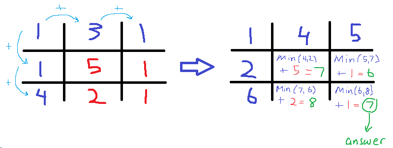
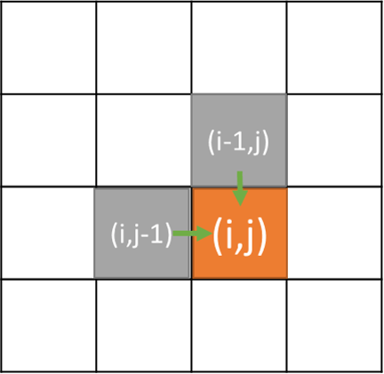

Given a m x n grid filled with non-negative numbers, find a path from top left to bottom right which minimizes the sum of all numbers along its path.
Note: You can only move either down or right at any point in time.
Example:
Input:
[
[1,3,1],
[1,5,1],
[4,2,1]
]
Output: 7
Explanation: Because the path 1→3→1→1→1 minimizes the sum.

思考题：尝试使用一维数组做备忘录来实现一下。
Given a m x n grid filled with non-negative numbers, find a path from top left to bottom right which minimizes the sum of all numbers along its path.
Note: You can only move either down or right at any point in time.
Example:
Input: [ [1,3,1], [1,5,1], [4,2,1] ] Output: 7 Explanation: Because the path 1→3→1→1→1 minimizes the sum.
1
2
3
4
5
6
7
8
9
10
11
12
13
14
15
16
17
18
19
20
21
22
23
24
25
26
27
28
29
30
31
32
33
34
35
36
37
38
39
40
41
42
43
44
45
46
47
48
49
50
51
52
53
54
55
56
57
58
59
60
61
62
63
64
65
66
67
68
69
70
71
72
73
74
75
76
77
78
79
80
81
82
83
package com.diguage.algorithm.leetcode;
import java.util.Arrays;
import java.util.Objects;
/**
* = 64. Minimum Path Sum
*
* https://leetcode.com/problems/minimum-path-sum/[Minimum Path Sum - LeetCode]
*
* @author D瓜哥, https://www.diguage.com/
* @since 2020-01-27 21:29
*/
public class _0064_MinimumPathSum {
/**
* Runtime: 7 ms, faster than 5.53% of Java online submissions for Minimum Path Sum.
* Memory Usage: 43.5 MB, less than 33.78% of Java online submissions for Minimum Path Sum.
*/
public int minPathSum(int[][] grid) {
if (Objects.isNull(grid) || grid.length == 0) {
return 0;
}
int yLength = grid.length;
int xLength = grid[0].length;
for (int y = 0; y < yLength; y++) {
for (int x = 0; x < xLength; x++) {
if (y == 0 && x > 0) {
grid[y][x] = grid[y][x - 1] + grid[y][x];
} else if (y > 0 && x == 0) {
grid[y][x] = grid[y - 1][x] + grid[y][x];
} else if (y > 0 && x > 0) {
grid[y][x] = Math.min(grid[y - 1][x], grid[y][x - 1]) + grid[y][x];
}
}
}
return grid[yLength - 1][xLength - 1];
}
/**
* Runtime: 5 ms, faster than 7.69% of Java online submissions for Minimum Path Sum.
* Memory Usage: 43.2 MB, less than 36.48% of Java online submissions for Minimum Path Sum.
*/
public int minPathSumDp(int[][] grid) {
if (Objects.isNull(grid) || grid.length == 0) {
return 0;
}
int yLength = grid.length;
int xLength = grid[0].length;
int[][] sums = new int[yLength][xLength];
for (int i = 1; i < sums.length; i++) {
Arrays.fill(sums[i], Integer.MAX_VALUE);
}
sums[0][0] = grid[0][0];
for (int x = 1; x < xLength; x++) {
sums[0][x] = sums[0][x - 1] + grid[0][x];
}
for (int y = 1; y < yLength; y++) {
sums[y][0] = sums[y - 1][0] + grid[y][0];
}
for (int y = 1; y < yLength; y++) {
for (int x = 1; x < xLength; x++) {
sums[y][x] = Math.min(sums[y - 1][x], sums[y][x - 1]) + grid[y][x];
}
}
return sums[yLength - 1][xLength - 1];
}
public static void main(String[] args) {
_0064_MinimumPathSum solution = new _0064_MinimumPathSum();
int[][] g1 = {{1, 3, 1}, {1, 5, 1}, {4, 2, 1}};
int r1 = solution.minPathSum(g1);
System.out.println((r1 == 7) + " : " + r1);
int[][] g2 = {{1, 2}, {5, 6}, {1, 1}};
int r2 = solution.minPathSum(g2);
System.out.println((r2 == 8) + " : " + r2);
}
}